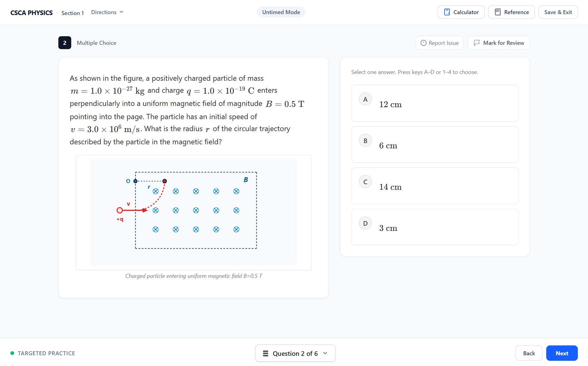
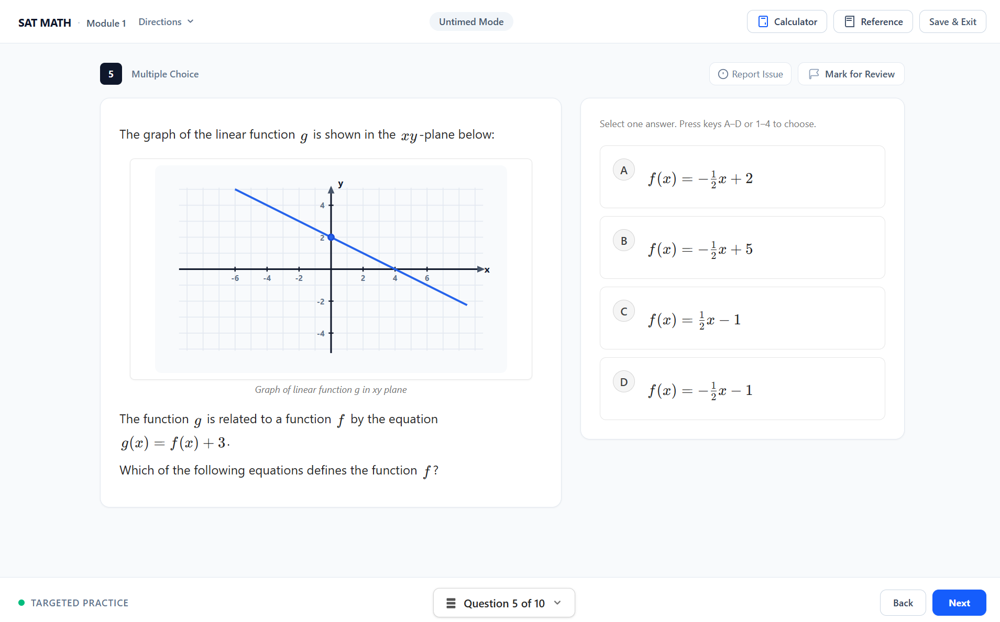

Built by a student preparing for CSCA & SAT. 1,039 SymPy-verified STEM questions, 170 crisp vector SVG diagrams, and 1-click Practice Similar drills—100% offline, zero login, zero paywall during beta.


Miss a hard circuit or SAT 750+ Boss problem? Generate 5 fresh, mathematically verified variations of that exact archetype instantly.
350 CSCA Math, 325 CSCA Physics (160 vector SVGs), and 364 SAT Math questions. Exact symbolic keys and strict SPR grading (.5 = 0.5 = 1/2).
Distraction-free exam shell with authentic Q1→Q48 (CSCA) and adaptive Q1→Q22 (SAT) difficulty ramps, plus strict no-calculator CSCA mock mode.
VirusTotal Scan: View full report (68/70 clean) — 2 generic heuristic flags (Arctic Wolf, SecureAge) are standard false positives for unsigned NSIS installers.
SHA-256:
503cae6556e24c0ae791773558e467d985c502f0deabbd697d8bf4d67b347302